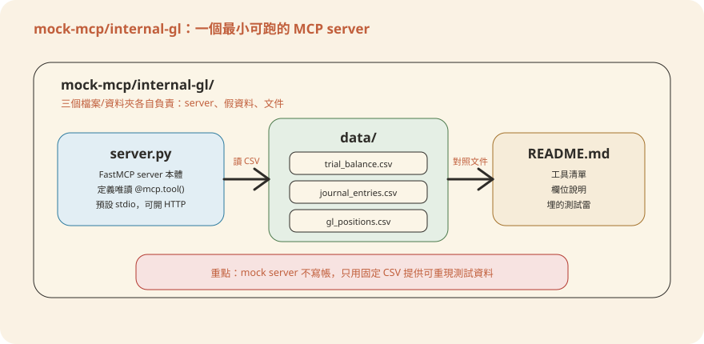
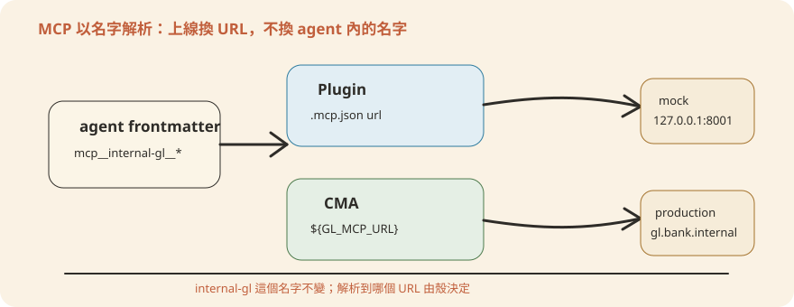

Chapter 6整合銀行內部系統 — MCP
前面幾章談的都是 agent「怎麼想」；這章談 agent「怎麼讀資料」。十支 agent 沒有一支是憑空生成報告的 —— 它們全部靠 MCP（Model Context Protocol，模型情境協定）去接總帳、CRM、行情、徵信資料。這章先把「MCP 用名字接線」這個核心觀念講透，再拆開一支 mock MCP server 看它長什麼樣，接著帶你為銀行自己的核心帳務（core banking）與徵信系統寫一支同樣形狀的 server，最後講清楚「mock 換真實來源」那一刀該怎麼切。
- MCP 是什麼——agent 的四塊積木之一（第 0 章第 3 節）：本章會一直用到「標準插座」這個比喻，先回去看一眼會順很多。
- 先用 mock 把 agent 跑通一次（第 3 章）：本章解剖的 mock server，就是你在第 3 章按下去就會動的那幾支。跑過一次再讀，體感完全不同。
6.1 MCP 是什麼：標準插座與名字解析
先講結論：agent 只記得資料來源的「名字」，不記得它的網址。這一句話是全章的地基。
MCP（Model Context Protocol，模型情境協定）是「讓 agent 接到外部系統（總帳、CRM、行情、徵信）的標準插座」。agent 的系統提示只宣告要用哪些 mcp__<server>__* 工具。這個 server 實際跑在哪台機器、是誰維護的，agent 完全不管。
用一個銀行日常的比喻：公司總機的分機號碼。你要找總帳組，永遠撥「分機 8001」。總帳組換了辦公室、換了承辦人、甚至整組搬到別棟大樓，你手上的分機號碼都不用改——改的是總機那張「分機 8001 → 轉接到哪支話機」的轉接表。在 MCP 的世界裡，agent 記的是分機號碼（server 的名字），.mcp.json 就是總機的轉接表（名字 → 網址）。換話機後面接的人，不換分機號碼。
看實例。gl-reconciler 這支 agent 的 frontmatter（plugins/agent-plugins/gl-reconciler/agents/gl-reconciler.md）：
---
name: gl-reconciler
tools: Read, Grep, Glob, mcp__internal-gl__*, mcp__subledger__*
---這行只寫了兩個「名字」：internal-gl 和 subledger。就這樣，沒有任何網址。這兩個名字實際指到哪裡——是本機假伺服器、還是銀行正式核心系統——是在別的檔案設定的：外掛用 .mcp.json，CMA（Claude Managed Agents，託管代理）用環境變數。這份設定跟系統提示完全脫鉤。
url 從本機假位址改成銀行真實系統的位址——永遠不改 agent frontmatter 裡的 server 名稱。這一條規則貫穿本章所有內容：mock 換真實來源，是換插座另一端接的電器，不是換插座的形狀；是改總機的轉接表，不是要求全公司換一個新分機號碼。一句話總結：agent 認名字、不認網址；上線換的是名字背後的 URL，agent 那邊一個字都不用動。
6.2 兩類插座：真實廠商 vs 本機 mock
先講結論：repo 裡每個 MCP 名字都已經定義好了，差別只在「這個名字現在指到哪裡」。有的指到真實廠商的正式網址，有的指到你電腦上的假伺服器。
這些 server 定義在各 vertical（垂直領域包）的 .mcp.json。沒有一個名字是「查無此名」，可以分成兩類：
🌐 真實廠商（12 個）
如 factset、daloopa、moodys、lseg、pitchbook 等，.mcp.json 已經填好供應商的正式網址，只差你自己的訂閱金鑰。
🖥️ 本機 mock（7 個）
如 capiq、crm、screening、internal-gl、subledger、nav、portfolio，指到 repo 內建的 mock-mcp/，跑在 127.0.0.1:800x、餵假 CSV，零金鑰就能離線把 agent 跑一遍。
下表是 docs/TechSummary.md 第三節裡「十個 Agent 各需要哪些 MCP」的對照，逐字照抄、未做任何增補：
| Agent | 需要的 MCP | 現在指到 |
|---|---|---|
| earnings-reviewer | factset、daloopa | 🌐 真實廠商 |
| market-researcher | capiq、factset | capiq 本機 mock／factset 真實廠商 |
| model-builder | capiq、daloopa | capiq 本機 mock／daloopa 真實廠商 |
| pitch-agent | capiq（CMA 另加 daloopa） | capiq 本機 mock／daloopa 真實廠商 |
| meeting-prep-agent | crm、capiq | 🖥️ 本機 mock |
| kyc-screener | screening | 🖥️ 本機 mock |
| gl-reconciler | internal-gl、subledger | 🖥️ 本機 mock |
| month-end-closer | internal-gl | 🖥️ 本機 mock |
| statement-auditor | nav | 🖥️ 本機 mock |
| valuation-reviewer | portfolio | 🖥️ 本機 mock |
再把 7 個本機 mock 攤開成「MCP ↔ 環境變數 ↔ 定義來源」的對照（同樣照抄 docs/TechSummary.md）：
| 本機 mock MCP | 哪些 agent 在用 | 定義在哪個 vertical .mcp.json | CMA 環境變數 |
|---|---|---|---|
capiq | market-researcher、model-builder、pitch-agent、meeting-prep-agent | financial-analysis | ${CAPIQ_MCP_URL} |
crm | meeting-prep-agent | wealth-management | ${CRM_MCP_URL} |
screening | kyc-screener | operations | ${SCREENING_MCP_URL} |
internal-gl | gl-reconciler、month-end-closer | fund-admin | ${GL_MCP_URL} |
subledger | gl-reconciler | fund-admin | ${SUBLEDGER_MCP_URL} |
nav | statement-auditor | fund-admin | ${NAV_MCP_URL} |
portfolio | valuation-reviewer | private-equity | ${PORTFOLIO_MCP_URL} |
對銀行工程師來說，最相關的是 internal-gl／subledger／nav 這三支。它們定義在 plugins/vertical-plugins/fund-admin/.mcp.json，撐起 gl-reconciler（每日總帳對子帳）與 month-end-closer（月結試算表）這兩支後台 agent。這份 .mcp.json 目前長這樣——就是上一節說的「總機轉接表」本人：
{
"mcpServers": {
"internal-gl": { "type": "http", "url": "http://127.0.0.1:8001/mcp" },
"subledger": { "type": "http", "url": "http://127.0.0.1:8002/mcp" },
"nav": { "type": "http", "url": "http://127.0.0.1:8004/mcp" }
}
}對照 financial-analysis 那份，可以清楚看到「一份 .mcp.json 裡本機 mock 跟真實廠商網址是並存的」——capiq 指本機 8007 埠，daloopa、factset 等 12 個直接是供應商正式網址：
{
"mcpServers": {
"capiq": { "type": "http", "url": "http://127.0.0.1:8007/mcp" },
"daloopa": { "type": "http", "url": "https://mcp.daloopa.com/server/mcp" },
"factset": { "type": "http", "url": "https://mcp.factset.com/mcp" },
"moodys": { "type": "http", "url": "https://api.moodys.com/genai-ready-data/m1/mcp" }
/* ...共 12 個真實廠商連接器 */
}
}一句話總結：19 個 MCP 名字全部已定義好，12 個指真實廠商、7 個指本機 mock，同一張轉接表裡真假並存。
6.3 解剖一個 mock MCP server：internal-gl
要幫銀行核心系統寫 MCP server，最快的辦法不是從零設計，而是先看一個「已經寫好、能跑」的範本長什麼形狀。mock-mcp/internal-gl/ 就是這樣一支 server——它頂替 gl-reconciler／month-end-closer 要接的總帳系統，餵的是假資料，但工具介面跟真實系統要提供的一模一樣。
假的試算表、傳票、GL 部位
FastMCP 定義 5 個唯讀
@mcp.tool()開成 streamable-http 端點
agent 透過
mcp__internal-gl__* 呼叫整個資料夾只有三個檔案，彼此獨立、沒有共用程式碼：

internal-gl mock server 的結構很小：server 定義工具，CSV 提供固定假資料，README 說明工具與埋雷。server.py 用官方 mcp SDK 的 FastMCP，把每個工具宣告成一個有 docstring（函式開頭的說明文字）的 Python function。SDK 會自動把 docstring 轉成給 agent 看的工具說明——工程師寫給人看的註解，直接變成 agent 讀的使用手冊。五個工具分兩層：先讓 agent「探索」有哪些 entity／period 可查，再依需要往下鑽：
| 工具 | 用途 |
|---|---|
list_entities() | 列出可查的 entity/fund 與 period —— 先呼叫這支，探索其他工具能吃的參數值 |
get_trial_balance(entity, period) | 試算表：每行含 prior/current YTD、變動百分比、借貸平衡檢查 |
get_journal_entries(entity, account?, start_date?, end_date?, source?) | 依科目/日期/來源篩傳票，用來解釋波動（flux） |
get_account_balance(entity, account, period) | 單一科目的餘額 |
get_gl_positions(fund, as_of) | 部位層級 GL 餘額（對帳的 GL 那一側） |
核心工具在做的事，一句話就能講完：收到 agent 的查詢，讀 CSV、挑出符合條件的列、算好衍生欄位，回一包乾淨的 JSON。沒有資料庫、沒有 ORM，非工程讀者記到這裡就夠了。想看程式碼長什麼樣、每一行在做什麼，展開下面的進階區塊：
mcp = FastMCP("internal-gl", host="127.0.0.1", port=DEFAULT_PORT)
@mcp.tool()
def get_trial_balance(entity: str, period: str) -> dict:
"""Return the trial balance for an entity and period (YYYY-MM).
Each line has the prior-month and current-month YTD balance plus the
computed movement (for flux / variance analysis). Also returns the
debit=credit balance check. Pre-close figures (accruals not yet booked).
"""
rows = [r for r in _raw("trial_balance.csv")
if _eq(r, "entity", entity) and _eq(r, "period", period)]
# ...算 movement、movement_pct，加總 total_debits / total_credits
return {"entity": entity, "period": period, "status": "pre-close",
"lines": out, "total_debits": total_dr, "total_credits": total_cr,
"balanced": abs(diff) < 0.01}逐行看重點：第一行 FastMCP("internal-gl", ...) 的第一個參數就是「名字」——跟 .mcp.json 裡的 key、agent frontmatter 裡 mcp__internal-gl__* 的中段，三處必須一致。@mcp.tool() 裝飾器把一個普通 Python function 註冊成 MCP 工具；docstring 原封不動變成 agent 看到的工具說明。函式本體只做三件事：用 _raw() 讀 CSV、用 list comprehension 篩 entity 與 period、回傳時把 movement／movement_pct／balanced 這些衍生欄位一起算好附上。最後那行 abs(diff) < 0.01 是借貸平衡檢查——容忍一分錢以內的浮點誤差。
三個設計重點，是你為銀行系統寫 server 時要照抄的：
- docstring 就是給 agent 看的 API 文件。參數意思、可接受的值、回傳結構全部寫在 docstring 裡（例如
source可以是"Payroll"、"AP"、"Billing"、"Manual"、"Bank"），agent 靠這段文字決定怎麼呼叫。 - 唯讀由設計保證，不是靠說明文件。整支 server 沒有任何一個會寫回資料的工具 —— README 明講：「Read-only — no posting tools」。這比在系統提示裡叮嚀「不要寫入」可靠得多：工具集裡根本沒有寫入的入口。就像出納櫃檯的查詢終端機，鍵盤上根本沒有「過帳」這顆鍵。
- 回傳結構化 JSON，帶入商業邏輯的衍生欄位。不是把 CSV 原樣丟給 agent，而是先算好 movement、movement_pct、balanced 這些欄位 —— 讓 agent 少做一步容易出錯的心算。
gl_positions.csv 的部位跟 subledger/ 的子帳資料刻意兜不起來（EQ-VRT 數量 50,000 vs 52,500、FI-XYZ 面額 2,000 萬 vs 1,900 萬），目的是讓 gl-reconciler 真的有斷點可抓、可驗證 agent 的把關有沒有生效。你在寫銀行自己的測試資料時，也該刻意埋幾筆已知異常，而不是全部乾淨資料。一句話總結：一支 mock server 就是「CSV 假資料 ＋ 幾個有清楚 docstring 的唯讀查詢工具」，而這個形狀正是你要照抄的範本。
6.4 為銀行核心系統寫自己的 MCP server
internal-gl 頂替的是「總帳」。銀行工程師真正要接的往往是兩類系統：核心帳務（core banking，如 Temenos、FIS、自建核心）查存款帳戶餘額與交易明細，以及徵信系統查信用評等與徵信報告——例如 KYC 或授信審查流程要用的那些資料。好消息是：寫法跟 internal-gl 一模一樣。用官方 MCP SDK（Python 或 TypeScript 皆有）：FastMCP／McpServer 起殼，每個查詢動作宣告成一個工具，docstring 講清楚輸入輸出。唯一的差別在底層——不是讀 CSV，而是呼叫核心系統既有的查詢 API 或唯讀資料庫視圖。
設計工具時，先想清楚 agent 需要「查什麼」，再對應成最小的一組工具 —— 不要為了「完整」而把整套核心系統 API 都包出來。就像分行櫃員的權限：辦存匯業務的櫃員，系統裡就只開存匯查詢的畫面，不會順便把放款審批畫面也開給他：
| 系統 | 工具 | 輸入 | 輸出（節錄） |
|---|---|---|---|
| 核心帳務 | get_account_balance(account_no, as_of) | 帳號、查詢日 | 可用餘額、帳戶狀態、幣別 |
get_transactions(account_no, start_date, end_date, type?) | 帳號、期間、交易類型（可選） | 交易明細清單（日期、金額、摘要、對手帳號末四碼） | |
| 徵信系統 | get_credit_report(customer_id, as_of) | 客戶 ID、查詢日 | 信用評等、負債比、逾期紀錄摘要（不含身分證全碼） |
Python 版骨架在做的事：宣告一支叫 core-banking 的 server，裡面放一個唯讀工具 get_account_balance——收帳號和日期、去核心系統查餘額、把帳號遮罩成末四碼後回傳。完整程式碼與逐行說明在進階區塊：
from mcp.server.fastmcp import FastMCP
mcp = FastMCP("core-banking", host="127.0.0.1", port=8010)
@mcp.tool()
def get_account_balance(account_no: str, as_of: str) -> dict:
"""查詢存款帳戶在指定日期的可用餘額（唯讀）。
account_no: 帳號（僅接受本行帳號格式）
as_of: ISO 日期, 例如 "2026-07-06"
回傳: {account_no, as_of, currency, available_balance, status}
"""
row = core_db.query_balance(account_no, as_of) # 呼叫核心系統唯讀 API/view
if row is None:
return {"error": f"account {account_no} not found"}
return {
"account_no": mask_account(account_no), # 遮罩：只回末四碼
"as_of": as_of, "currency": row.ccy,
"available_balance": row.avail_bal, "status": row.status,
}
# 沒有 post_transaction()、沒有 update_account() —— 唯讀由設計保證，
# 跟 internal-gl 一樣：寫入能力不存在於工具集裡，不是靠 prompt 叮嚀。要注意的三行：FastMCP("core-banking", ...) 的名字之後會出現在 .mcp.json 與 agent frontmatter，取了就別再改；core_db.query_balance(...) 是你接自家系統的地方——換成核心系統的查詢 API 或唯讀 view；mask_account(...) 把遮罩做在 server 端回傳之前，agent 從頭到尾拿不到完整帳號。檔案最底部那段註解也是重點：整個工具集裡刻意不存在任何寫入函式。
偏好 TypeScript 的團隊有完全對應的寫法：官方 @modelcontextprotocol/sdk 的 McpServer，工具名、schema（輸入格式定義）、回傳結構都跟 Python 版相同。細節同樣收進進階區塊：
import { McpServer } from "@modelcontextprotocol/sdk/server/mcp.js";
import { z } from "zod";
const server = new McpServer({ name: "core-banking", version: "1.0.0" });
server.tool(
"get_account_balance",
"查詢存款帳戶在指定日期的可用餘額（唯讀）",
{ account_no: z.string(), as_of: z.string() },
async ({ account_no, as_of }) => {
const row = await coreDb.queryBalance(account_no, as_of);
if (!row) return { content: [{ type: "text", text: "account not found" }] };
return { content: [{ type: "text", text: JSON.stringify({
account_no: maskAccount(account_no), as_of,
currency: row.ccy, available_balance: row.availBal, status: row.status,
}) }] };
}
);對照重點：Python 用 docstring 描述工具，TypeScript 把說明文字當作 server.tool() 的第二個參數；輸入格式用 zod（z.string()）宣告，SDK 據此擋掉格式不對的呼叫；回傳要包成 MCP 的 content 陣列，實際資料用 JSON.stringify 塞在 text 欄位裡。遮罩一樣做在 server 端（maskAccount）。
徵信報告要不要整份丟給 agent？
不要。get_credit_report 應該回傳「agent 這個任務需要的欄位」（評等、負債比、逾期摘要），而不是整份 PDF 或原始資料庫紀錄。徵信報告常含大量 PII（個資），欄位遮罩要做在 server 這一層，agent 拿到的已經是脫敏過的結構化資料 —— 詳見下一節。
一句話總結：接銀行核心系統不用發明新架構——照 internal-gl 的形狀，把「讀 CSV」換成「呼叫核心系統唯讀 API」，工具愈少愈好、一律唯讀。
6.5 認證與安全：最小權限、遮罩、稽核
先講結論：mock 的「零認證」只能活在你自己的電腦上。Mock server 為了本機開發方便，完全沒有認證 —— http://127.0.0.1:8001/mcp 誰連得到就能查。銀行內部系統絕對不能這樣上線。四件事要在寫 server 的當下就做，不是上線前才補：
認證方式
API 金鑰或 OAuth 2.0 client-credentials，用服務帳號（service account）而非個人帳號驗證。金鑰放在部署環境的密鑰管理服務（如 AWS Secrets Manager），不寫進程式碼或 .mcp.json。
最小權限
服務帳號只給這支 server 需要的查詢權限（例如只能讀存款帳戶餘額表，不能讀放款額度表），不要圖方便給一個萬用的資料庫帳號。
PII 欄位遮罩
身分證字號、完整帳號、地址等欄位在 server 回傳前就遮罩或截斷（如上節範例只回帳號末四碼），不要指望 agent 自己記得不要外洩。
Audit log
每次工具呼叫記錄「誰（哪個 agent/session）、查了什麼（帳號/客戶 ID）、什麼時候」，供事後稽核——這對接觸客戶資料的查詢尤其重要，銀行的資安與合規審查通常會要求這份紀錄。
這四件事都做在 MCP server 這一層，而不是指望 agent 系統提示裡的文字約束。跟 6.4 節「唯讀由設計保證」是同一個原則：安全要靠架構擋住，不是靠叮嚀。用銀行的話說——金庫靠的是門禁與雙人開鎖的制度設計，不是門口貼一張「請勿擅入」。
一句話總結：認證、最小權限、PII 遮罩、audit log 四件事全部做在 server 這一層，讓「agent 想犯錯也沒有入口」。
6.6 mock → 真實來源：兩種殼怎麼切
先講結論：不管哪種殼，上線都只是「把名字指向的網址換掉」。同一個 agent 有兩種殼（外掛（Plugin）／CMA），MCP 上線的改法也對應兩種：

改對應 vertical 的 .mcp.json，把 url 從 127.0.0.1:800x 改成銀行真實系統的位址：
{
"mcpServers": {
"internal-gl": { "type": "http", "url": "https://gl.bank.internal/mcp" },
"subledger": { "type": "http", "url": "https://subledger.bank.internal/mcp" },
"nav": { "type": "http", "url": "https://nav.bank.internal/mcp" }
}
}server 名稱 internal-gl／subledger／nav 一個字都不動，gl-reconciler frontmatter 裡的 mcp__internal-gl__* 也不用改。也可以不改這份檔案，改用 claude mcp add 在專案根用同名 server 覆蓋——一次定義、整個 session 共享。
CMA 的 agent.yaml 一開始就用 ${..._MCP_URL} 佔位，不用改 yaml，改部署時的環境變數即可。repo 附的 mock-mcp/mock.env 就是本機 mock 版本，可以直接當「上線要設哪些變數」的範本：
export GL_MCP_URL=http://127.0.0.1:8001/mcp # internal-gl
export SUBLEDGER_MCP_URL=http://127.0.0.1:8002/mcp # subledger
export PORTFOLIO_MCP_URL=http://127.0.0.1:8003/mcp # portfolio
export NAV_MCP_URL=http://127.0.0.1:8004/mcp # nav
export CRM_MCP_URL=http://127.0.0.1:8005/mcp # crm
export SCREENING_MCP_URL=http://127.0.0.1:8006/mcp # screening
export CAPIQ_MCP_URL=http://127.0.0.1:8007/mcp # capiq
# factset / daloopa: 出廠設定就是真實廠商網址（需金鑰）。
# 要離線測試才解除以下註解、換成本機 mock：
# export FACTSET_MCP_URL=http://127.0.0.1:8008/mcp
# export DALOOPA_MCP_URL=http://127.0.0.1:8009/mcp上線時把同幾個變數指到銀行真實系統即可，例如 export GL_MCP_URL=https://gl.bank.internal/mcp。scripts/deploy-managed-agent.sh 對環境變數代換有白名單防護（值只允許 [A-Za-z0-9._/:@-]），奇怪字元會直接被拒絕。
不管走哪一種殼，記住 docs/TechSummary.md 第三節那條鐵則：兩種都不需要去改 agent frontmatter 的 server 名稱。你是把同一把名字指到不同網址，不是換名字——分機號碼從頭到尾都是那一個，換的只是總機轉接表上填的話機。
- 已確認要接的 agent 在 frontmatter 宣告了哪些
mcp__<name>__* - 已對照
docs/TechSummary.md第三節，確認這個名字定義在哪個 vertical 的.mcp.json - 新寫的 server 只有唯讀工具，沒有 post/write 類工具
- PII 欄位（帳號、身分證字號等）已在 server 端遮罩，不是回傳原始值
- 服務帳號權限已縮到「這支 server 需要的最小範圍」
- 每次工具呼叫都寫進 audit log
- 上線只改
.mcp.json的 url 或 CMA 的${..._MCP_URL}，agent frontmatter 完全沒動
一句話總結：外掛改 .mcp.json 的 url、CMA 改 ${..._MCP_URL} 環境變數——兩條路殊途同歸，agent frontmatter 的名字永遠不動。
.mcp.json 裡。寫給銀行核心系統或徵信系統的 MCP server，形狀跟 mock-mcp/internal-gl/ 一樣：FastMCP／McpServer 起殼、每個查詢包成一個有清楚 docstring 的唯讀工具、PII 在 server 端就遮罩掉。上線只改兩處：外掛改 .mcp.json 的 url，CMA 改 ${..._MCP_URL} 環境變數。.mcp.json（或 CMA 的環境變數）裡的 url，agent frontmatter 引用的 server 名稱 internal-gl 永遠不變——這樣才能讓同一份 agent 系統提示，在 mock 和真實環境下不用改一個字就能切換資料來源。